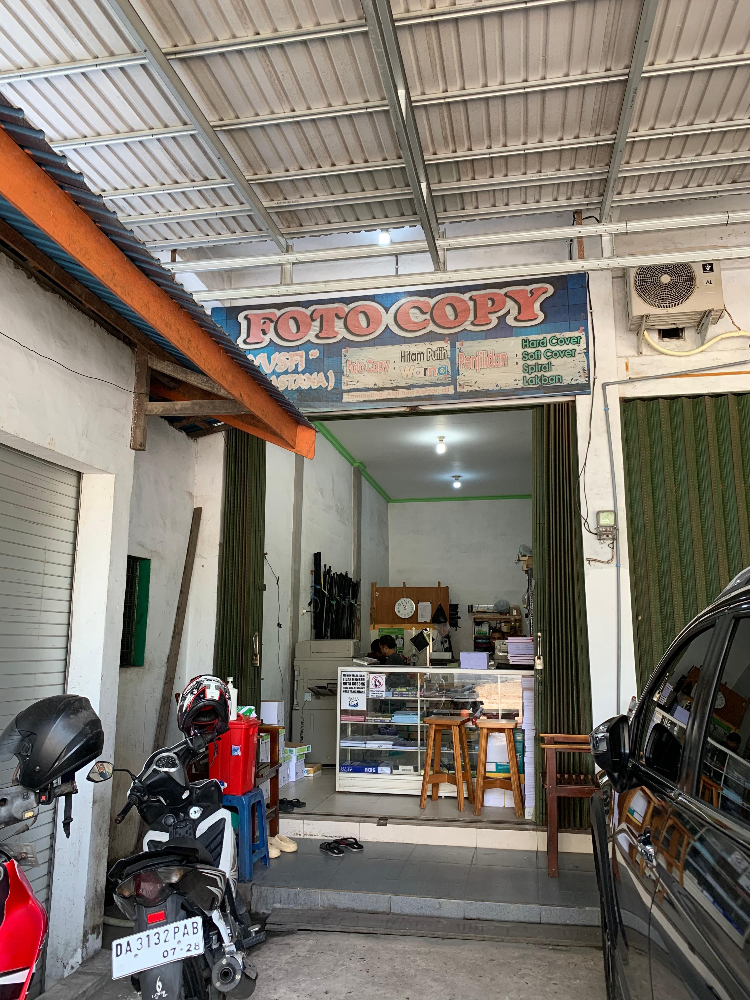
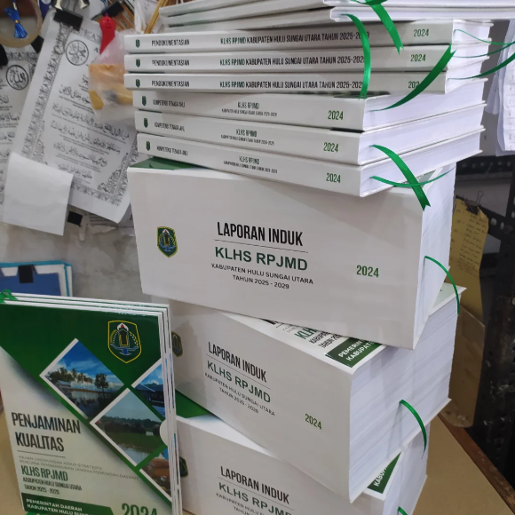
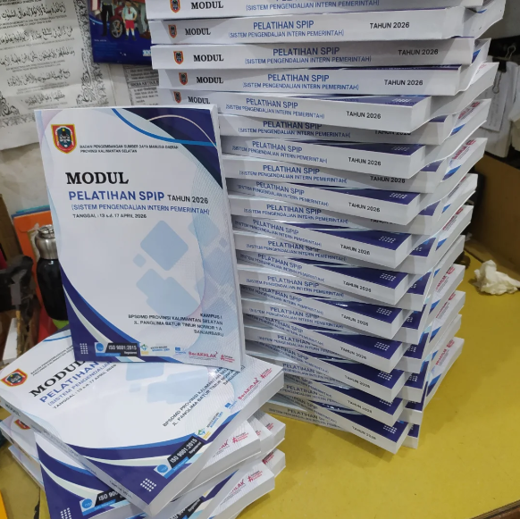
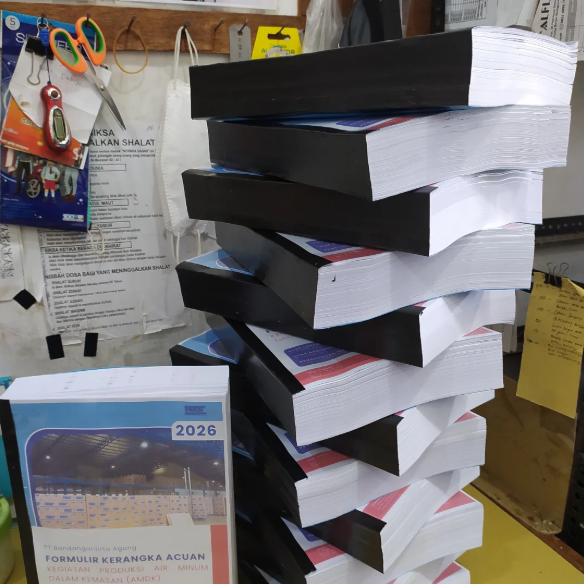
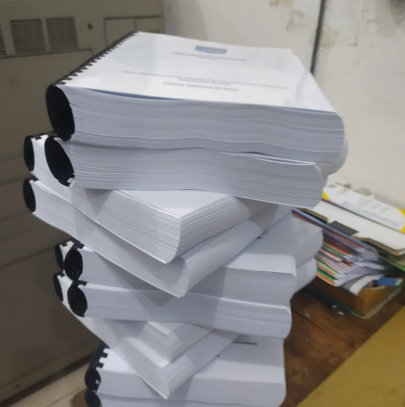
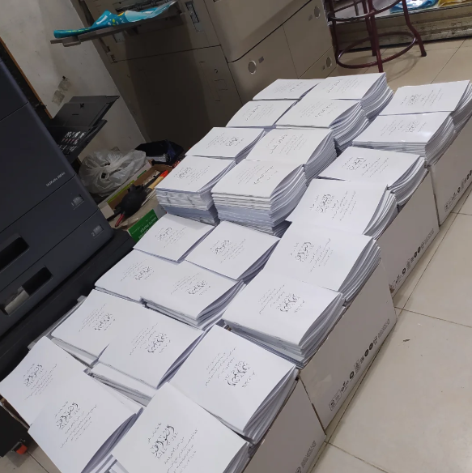
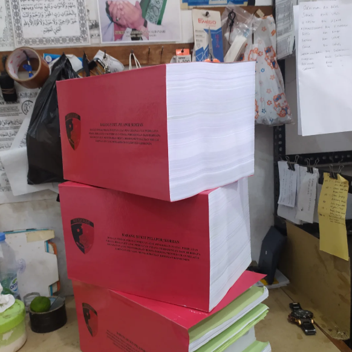
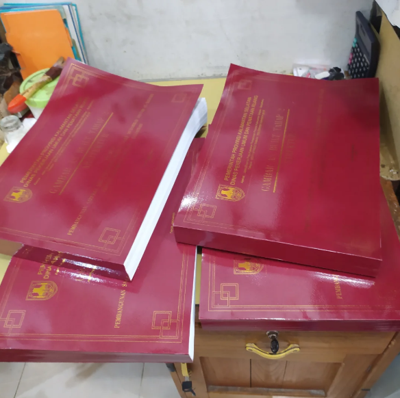

Cepat, Rapi, Lengkap
Fotocopy & Jilid Sekali Datang, Pasti Balik Lagi!
Melayani fotocopy hitam putih & warna, penjilidan berbagai gaya, laminating, print scan, dan keperluan dokumen Anda. Solusi cetak untuk mahasiswa, kantor, instansi, dan umum.

Layanan Kami
Fotocopy Hitam Putih & Warna
Hitam putih & full color cepat
Penjilidan
Hardcover, softcover, spiral/ring, lakban
Laminating
Dokumen jadi awet & profesional
Print & Scan
Cetak dokumen, scan kualitas tinggi
Cetak Buku
Berbagai kebutuhan cetak lainnya
Lainnya
Tinggal bilang, pasti kami bantu
Cocok untuk Anda:
Galeri Hasil

Jilid Hardcover

Jilid Softcover

Jilid Lakban

Jilid Spiral

Kitab/yasin

Buku Tebal

A3
🖨️ Fotocopy warna tajam
Lokasi Strategis
Jl. A. Yani KM 36, Seberang Gerbang UNLAM BJB
Deretan Mie Gacoan UNLAM, Samping Wedrink BJB
Jam buka: 09.30 – 17.30 (Malam tutup)
Buka Google Maps
Deretan Mie Gacoan UNLAM, Samping Wedrink BJB
Jam buka: 09.30 – 17.30 (Malam tutup)
🕘 Jam Buka: 09.30 – 17.30 (minggu tutup, malam tutup)
Lokasi: Seberang Gerbang UNLAM BJB
Butuh fotocopy cepat & rapi?
Hubungi kami via WhatsApp untuk konsultasi harga atau pemesanan. Siap melayani skripsi, laporan, dokumen kantor & instansi.
Fast response, konsultasi gratis. Pilih nomor yang aktif.
Pelayanan Cepat
Hasil Rapi
Harga Bersahabat
Banyak pilihan jilid